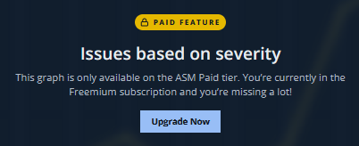

5. まとめ
ハンズオンのまとめ
このハンズオンでは、Mandiant ASM を操作し、参加者の組織に関連するアタックサーフェースを確認しました。最後に、ASMを利用することによるメリットを下記にまとめます。
-
外部露出しているデジタルアセットの把握と、そのセキュリティリスクの可視化
-
定期的な自動実行による、継続的なアタックサーフェース管理（毎日/毎週)
-
攻撃者視点でアタックサーフェースを管理することによる、攻撃者に先んじたセキュリティ対応の支援
-
継続的にアタックサーフェース管理による、クリティカルな脆弱性の報告などに対する緊急対応時のスムーズな影響度把握と、セキュリティ対応の優先順位付けの支援
無償体験版の機能制限と、フル機能評価プログラム
このハンズオンで利用した無償体験版には機能制限があります。
主な制限機能は下記となります。
-
探索の精度（一部の探索機能による実施）
-
探索の間隔（四半期の１度の探索実行）
-
探索設定の変更制限
-
プロジェクトの作成（事前に作成された１プロジェクトのみ）
-
コレクションの追加・変更（事前に作成された内容のみ）
-
URLスクリーンショット機能制限
-
Insights機能の制限（PDFレポート作成など）
この無償体験版とは別にフル機能が30日間利用できる無料評価プログラムがあります。 ご希望の場合は下記画面から登録するか、マンディアント担当営業まで個別にご連絡ください。


クリーンアップ
このハンズオンのクリーンアップは特に必要ありません。ワークショップで利用した無償体験版アカウントはこのセミナー終了後も引き続き利用可能です。好きなときにいつでも再度アクセスしてください。
ハンズオンは以上で終了です。お疲れ様でした！